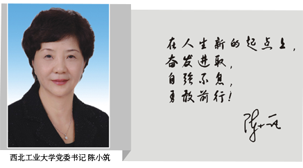
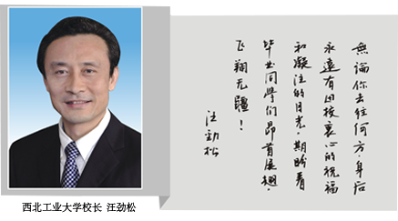
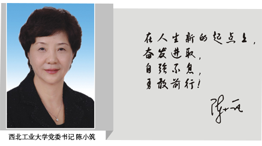
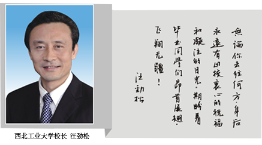

2015-04-02西北工大微生活
亲爱的2015届毕业研究生们： 青春似火，岁月如歌；光阴荏苒，时光如梭。在毕业歌奏响之际，你们即将告别培育自己多年的母校，踏上新的人生旅程。在这里，校友会特向你们致以最诚挚的祝贺和最美好的祝愿。 在过去的几年中，西工大的教室、图书馆、宿舍、运动场都留下了你们的青春印记。“公诚勇毅”的校训、“三实一新”的校风，也深深融入了你们的血脉中。你们在这里情操得以陶冶，领悟得以升华，学识得以增长，视野得以开拓。相信在这即将离开母校的时候，这些都将会变成一段回忆，一种寄托，一抹情怀，一笔财富。  亲爱的同学们，母校与校友这种终生不变的情结，是离不开、割不断的。无论你们奔向何方，母校都是你们永远的精神家园；无论遇到什么困难和挫折，母校都是你们坚强的后盾。今天，你们满载着师长的期盼、母校的祝福，扬起风帆驶向大海；明天，你们将在祖国的四面八方耕耘创造、迎接收获。我们真诚地希望你们每一位奋发有为，早出成绩，多出成绩，常与母校联系，常回“家”看看。  校友会作为母校与校友联系的桥梁和纽带，一直竭诚为校友做好服务。我们将通过刊物、网络、微信、联谊等方式，尽力让每位校友体会到母校的关怀、感受到母校的进步、参与到母校的建设发展中来。我们衷心希望你们不论身在何方，依然心系母校，依然情牵母校，时刻关注和支持母校的建设和发展。 祝同学们前程似锦、一切顺利! 西北工业大学校友会


西北工业大学校友会